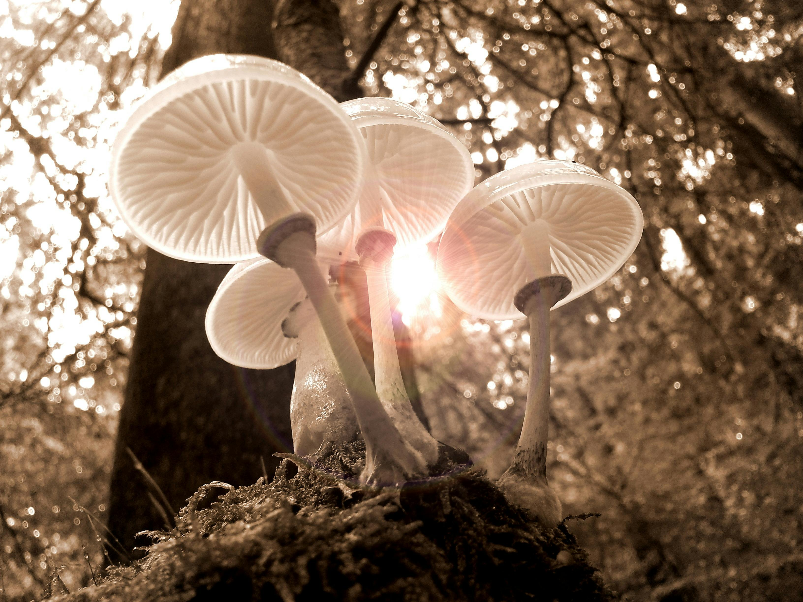

Fungi are very interesting creatures. Can you call them creatures? I think so. If you've heard of fungi, which infect insects, take over the control of their brain to navigate the insect body to a good spot, before they use the rest of the body to sprout fruiting bodies, you probably think so, too.
Other fascinating aspects of fungi are:
Who could not be fascinated?
Continue reading about fungi here.